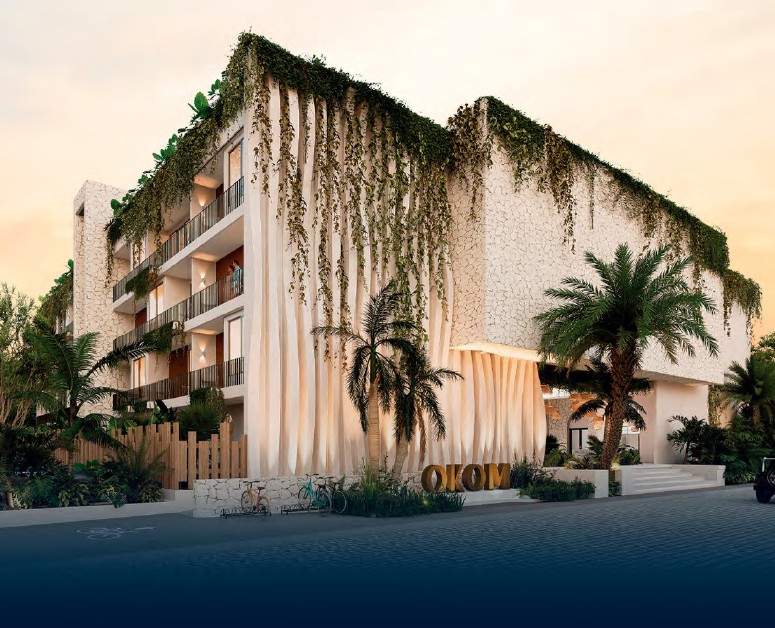
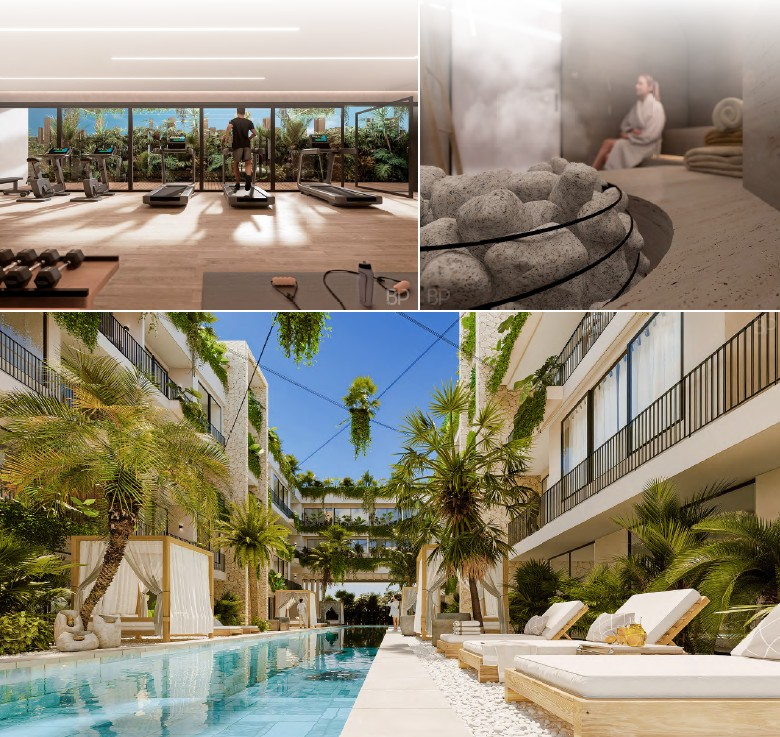
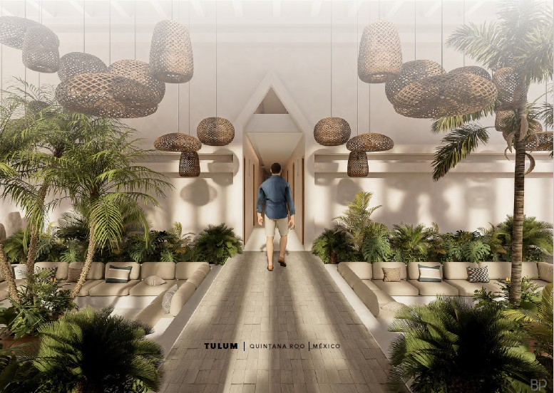
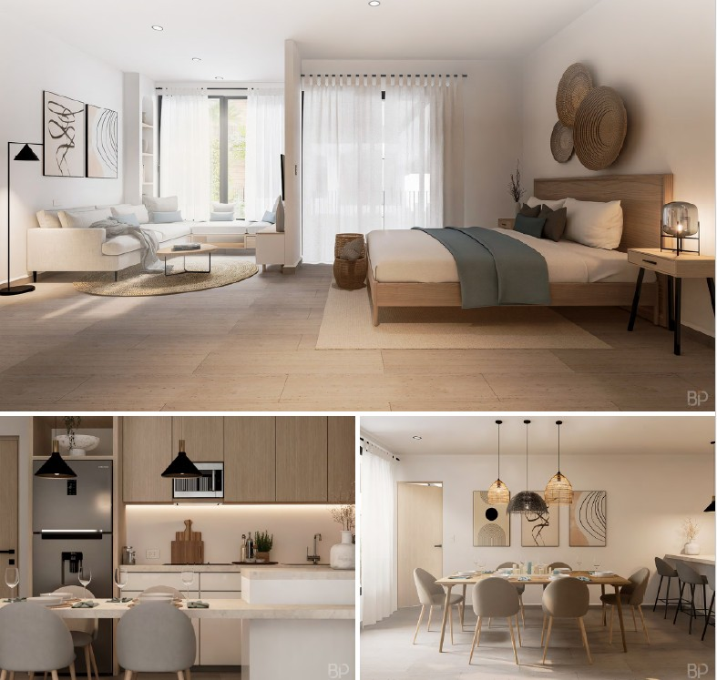
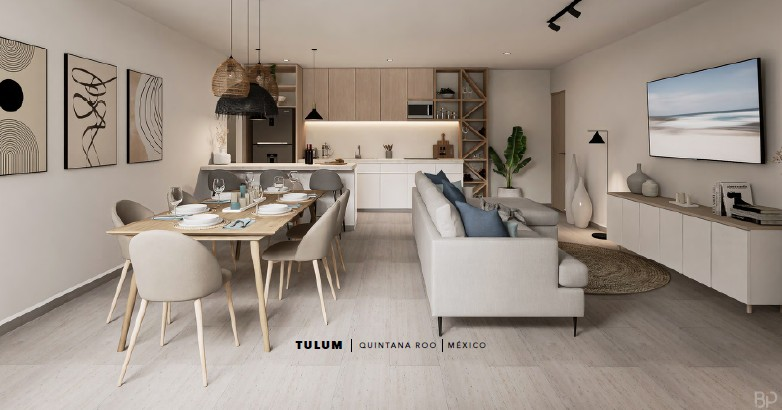
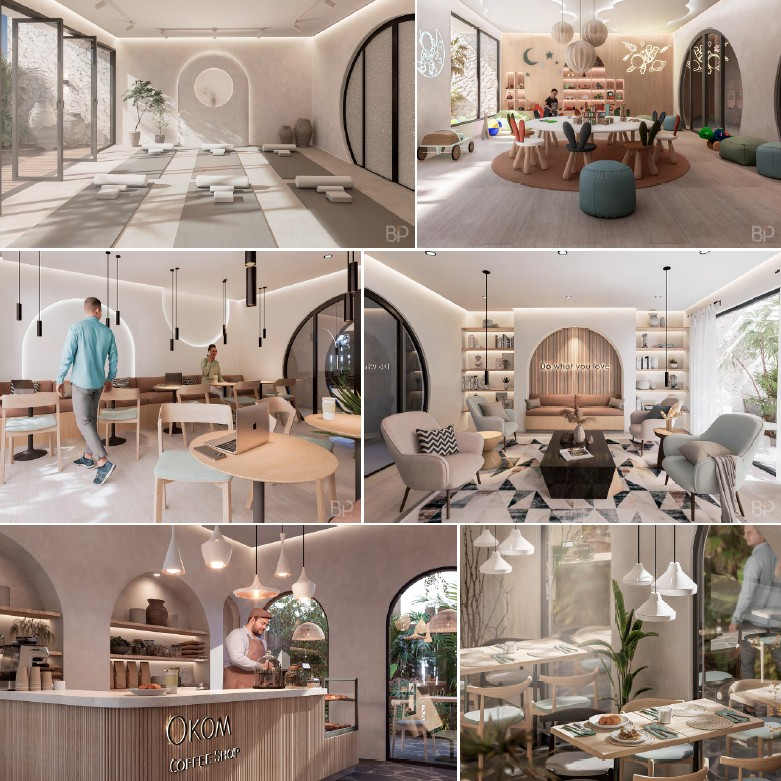
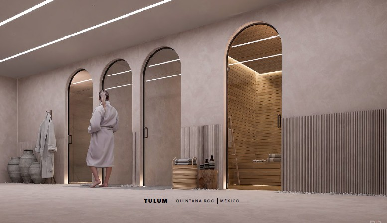
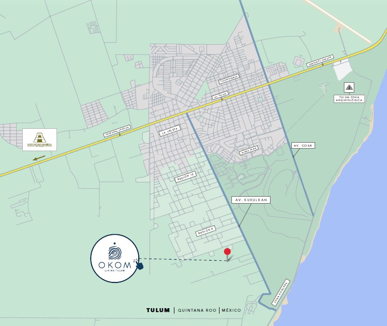
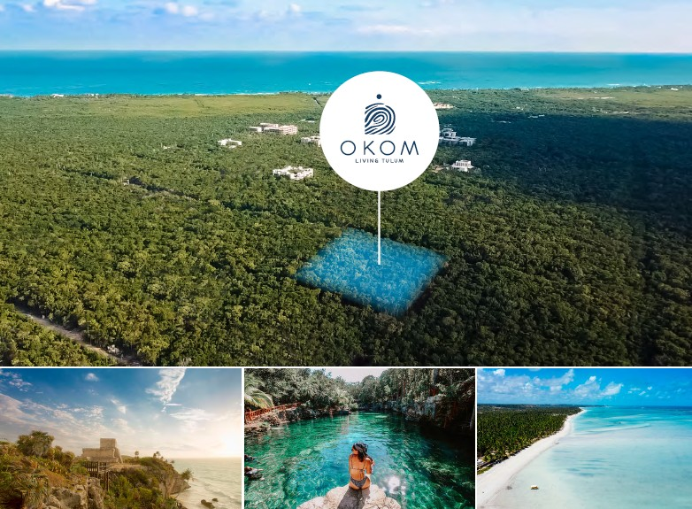

"The harmony of being in your place of peace, in a space that embraces you and won't let you go."
OKOM takes its name from a rare wood found only in the Riviera Maya — the ancient timber used to hold up the thatched rooftops of Maya construction. Here, it becomes a philosophy: something that holds you up, roots you, and shelters you in the most beautiful way.
Located in the heart of Tulum — five minutes from the beach clubs, steps from the best restaurants and cenotes — OKOM is a boutique residential development where biophilic architecture meets genuinely effortless living. Cascading tropical plants, natural stone, and light-washed interiors create a building that feels as alive as the jungle surrounding it.
Sky pool and rooftop grill. Private cinema. A coffee shop at your door. Yoga and wellness. Resort-level service, all day.

Building facade — cascading tropical plants, natural stone
The Name
OKOM is a rare wood found only in the Riviera Maya — used by the ancient Maya to build the timber beams that held up their homes. Strong, rare, irreplaceable. For this project, OKOM becomes a philosophy: the pillar that holds everything up, the structure beneath a life well lived.
The Vision
OKOM sits in the heart of Tulum but doesn't feel like a resort development. It feels like a place that belongs here. Biophilic architecture: cascading tropical plants, natural stone textures, light and air flowing through every space. Inside, calm and considered — light wood, natural tones, open layouts that invite you to stop and feel genuinely at home.
Residences
Studio and one-bedroom residences designed around light, texture and stillness. Every finish chosen with the same care as the architecture around it.

Studio residences — bedroom, living, kitchen & dining

Open-plan living — natural materials, jungle light
Life at OKOM
Resort-level amenities that residents access every day — not just on holiday. From the sky pool to the private cinema, everything here is designed for a life that feels exceptional.

Yoga · Private cinema · OKOM Coffee Shop · Garden lounge

Spa · Pool courtyard · Sun loungers
Amenities
Everything you need — and everything you didn't know you needed — within the building. No commute to the good life.

Where to find us

Enquire
Send me a message and I'll come back with full pricing, available units, floor plans and everything you need to move forward with confidence.